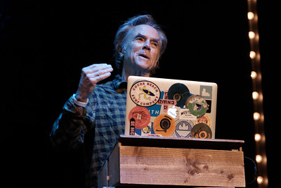

Influential People
Art
Artists
Frida Kahlo
Jean-Michel Basquiat
I don’t listen to what art critics say. I don’t know anybody who needs a critic to find out what art is.
Salvador Dalí
Design
Designers
David Carson

Susan Kare
If the Mac turned out to be such a revolutionary object––a pet instead of a home appliance, a spark for the imagination instead of a mere work tool––it is thanks to Susan’s fonts and icons, which gave it voice, personality, style, and even a sense of humor.
Engineering
Engineers
Håkon Wium Lie
My political manifesto can be summed up as: Global information, local production! That is, one should freely exchange bits of information at a global level, but atoms (including food, furniture, and people) are much harder to transport and there are natural restrictions.
Linus Torvalds
Tim Berners-Lee
Typography
Typographers
Jan Tschichold
Matthew Carter
Carter is both a man of the present, at home with the latest type technology, and a man of the past, fully aware of the long and fascinating history of the Roman alphabet.
Neville Brody